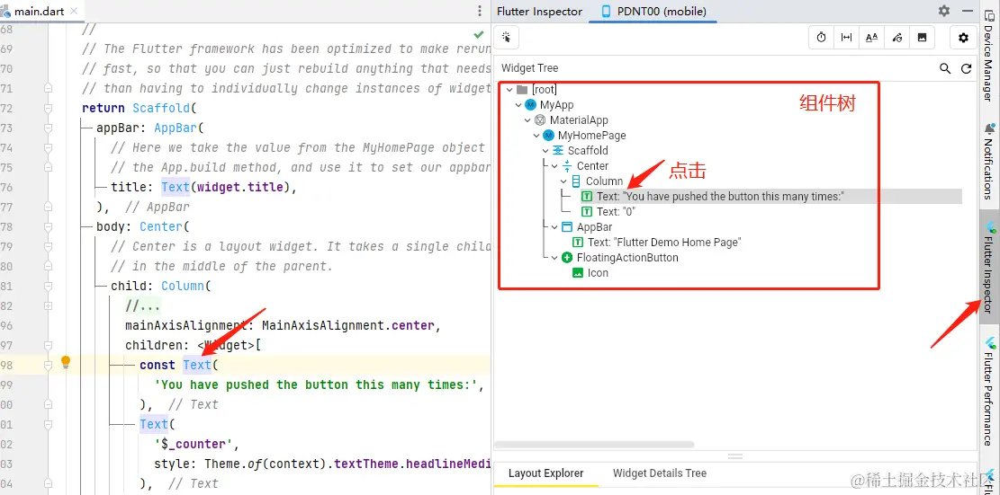
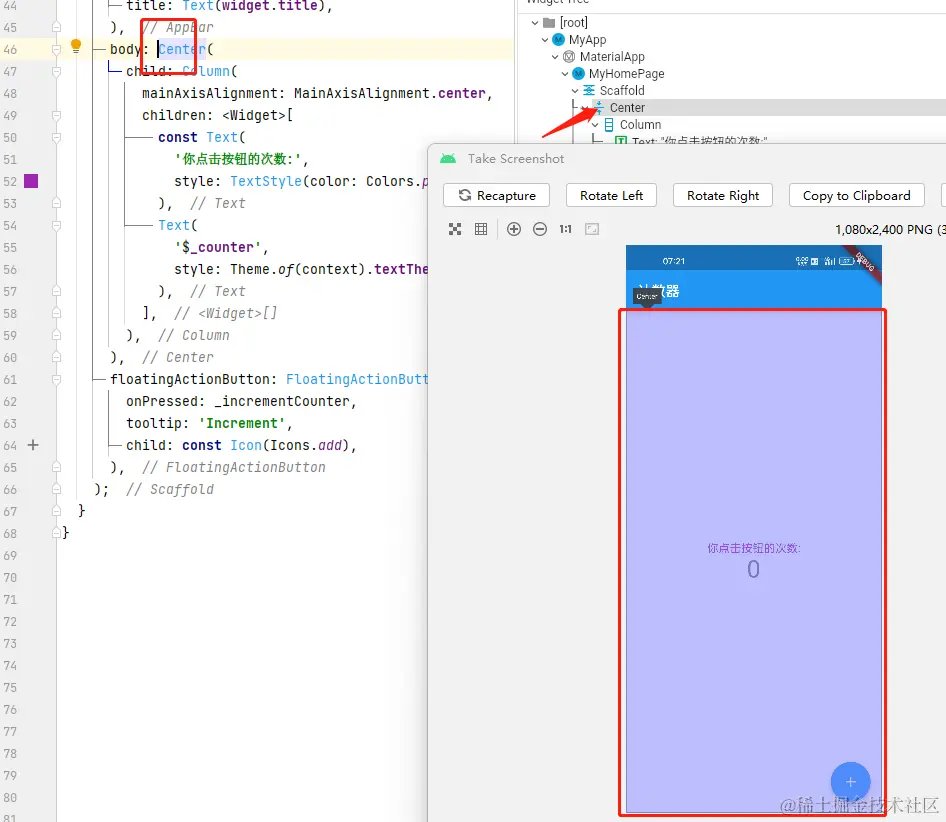

- 01 前言-教程内容导读.md.html
- 02 Flutter 开发环境的搭建.md.html
- 03 新手村基础 Dart 语法 (上).md.html
- 04 新手村基础 Dart 语法 (下).md.html
- 05 Flutter 计数器项目解读.md.html
- 06 猜数字界面交互与需求分析.md.html
- 07 使用组件构建静态界面.md.html
- 08 状态数据与界面更新.md.html
- 09 校验结果与提示信息.md.html
- 10 动画使用与状态周期.md.html
- 11 猜数字整理与总结.md.html
- 12 电子木鱼界面交互与需求分析.md.html
- 13 电子木鱼静态界面构建.md.html
- 14 计数变化与音效播放.md.html
- 15 弹出选项与切换状态.md.html
- 16 用滑动列表展示记录.md.html
- 17 电子木鱼整理与总结.md.html
- 18 白板绘制界面交互与需求分析.md.html
- 19 认识自定义绘制组件.md.html
- 20 通过手势在白板上绘制.md.html
- 21 白板画笔的参数设置.md.html
- 22 撤销功能与画板优化.md.html
- 23 应用界面整合.md.html
- 24 数据的持久化存储.md.html
- 25 网络数据的访问.md.html
- 26 教程总结与展望.md.html
- 捐赠
05 Flutter 计数器项目解读
通过前面两篇基础语法的学习，已经掌握了 Dart 语言最基础的逻辑控制能力。接下来我们来看一下新建时的默认计数器项目，对项目几个问题进行有一个简单的认知：
- 界面上的文字是由代码中的何处决定的？
- 点击按钮时，数字自加和更新界面是如何完成的？
- 界面中的显示部件是如何布局的？
- 我们如何修改界面中展示的信息，比如颜色、字体等？
| 界面显示部件 | 修改展示信息 |
|---|---|
一、代码定位工具
不管是自己写的代码，还是别人写的，随着代码量的增长，代码的可读性将面临考验。特别是新手朋友，喜欢把所有代码的实现逻辑塞在一块。如何在复杂的代码中找到关键的位置；或如何提纲挈领，将复杂的文字展示出结构性，对编程来说是非常重要的。在看代码之前，有必要先介绍几个快速定位代码的小技巧。
1. 全局搜索
在顶部栏 Edit/Find/Find in Files 打开搜索面板，面板中也可以看到对应的快捷键。如果快捷键没响应，很大可能是和输入法的快捷键冲突了。比如搜狗输入法，禁用其快捷键即可。
从视觉上可以看出，界面中有一些固定的文字，这些文字很可能在代码之中。所以全局的搜索是一个很有用的技巧，比如搜索 You have pushed 时，可以找到代码中与之对应的地方：
注:
在点击之后，就可以跳转到对应的位置，此时光标会在那里闪烁，如下所示：
当鼠标 悬浮 在上方的文件名上时, 会弹出文件所在的磁盘地址，这样能便于我们找到文件所在：
这样就能分析出，界面上展示的信息是由 lib/main.dart 决定的。这就是一个非常基本的 逻辑推理 过程，而整个过程和并不需要用到什么编程知识。相比于推理结果，这种推理的意识更加重要，很多时候初学者都会处于： 我不知道自己该知道什么，而推理的意识就是在让自己：我要知道自己想知道什么 。
2. 类结构信息
当分析一份代码文件时，在 AndroidStudio 中可以打开 Structure 页签，其中会展示出当前文件中的所有类的结构信息，比如成员属性、成员方法等。这样，你可以快速了解这份代码有哪些东西，在点击信息时，也能立刻跳转到对应的代码处：
其中 C 图标表示类，m 图标表示方法， f 图标表示成员属性。当前文件夹中定义了三个类型和一个 main 方法。每个类型中会定义若干方法和属性，其中可以清晰地看出函数的名称、入参和返回值。
3. 布局分析
在 Flutter Inspector 页签中，可以看出当前界面的布局结构。点击某项时，会跳转到代码对应的位置，这就是不过展示布局结构，辅助我们快速定位到对应代码位置：

如果布局结构过于复杂，在树中寻找节点也非常麻烦。如果现在已经有了一个项目，运行起来，如何迅速找到界面中的部件，对应代码中的位置呢？ Flutter Inspector 中提供了选择模式，点击下面的图标开启：
选择模式下，当点击界面上的显示部件，就会自动挑战到对应的代码位置。对于定位代码来说，可谓神器。另外注意一点，点击后左下角会有个搜索按钮，如果想选择其他部件，要先点一下那个搜索按钮：
| 选择模式 | 选择模式 |
|---|---|
二、计数器代码分析
去除注释之后，计数器项目也就 68 行 代码，算是一个非常简单的小项目，但它完成了一个基本的功能交互。可谓麻雀虽小五脏俱全。一开始是 main 方法，表示程序的入口，其中先创建 MyApp 类型对象，并将该对象作为参数传入 runApp 函数中。
void main() {
runApp(const MyApp());
}
1. 初见 Widget 类型
MyApp 继承自 StatelessWidget 类，并覆写了其 build 方法，返回 Widget 类型对象；在方法的实现中，创建了 MaterialApp 对象并返回，其中 theme 入参表示主题， 通过 Colors.blue 可以看到蓝色主题的来源。
这时，你可以将 blue 改为 red 然后按 Ctrl+S 进行保存，可以看到界面中的主题变成了红色。这种在开发过程中，不重新启动就可以更新界面的能力，称之为 热重载 hot reload 。不用每次都重新编译、启动，这可以大大提升开发的时间效率。
class MyApp extends StatelessWidget {
const MyApp({super.key});
@override
Widget build(BuildContext context) {
return MaterialApp(
title: 'Flutter Demo',
theme: ThemeData(
primarySwatch: Colors.blue,
),
home: const MyHomePage(title: 'Flutter Demo Home Page'),
);
}
}
决定界面展示的配置信息的类型我们称之为 组件 Widget， runApp 方法的入参是 Widget 类型，而 MyApp 可以占位参数，就说明它是 Widget 的派生类；MyApp#build 方法返回的是 Widget 类型，方法实现中实际返回的是 MaterialApp 对象，就说明 MaterialApp 也是 Widget 的派生类。这也是一个简单的逻辑推理过程。
另外 MaterialApp 构造方法的 home 入参，也是需要传入一个 Widget 类型，所以下面的 MyHomePage 也是 Widget 的派生类。从这里可以看出， Flutter 框架中界面的展示和 Widget 一族息息相关。
2. MyHomePage 代码分析
从代码中可以看出 MyHomePage 继承自 StatefulWidget , 其中有一个 String 类型的成员属性 title，并在构造时进行赋值。另外，还覆写了 createState 方法，创建 _MyHomePageState 对象并返回。
class MyHomePage extends StatefulWidget {
const MyHomePage({super.key, required this.title});
final String title;
@override
State<MyHomePage> createState() => _MyHomePageState();
}
对于初学者而言，并不需要太关注覆写的方法是何时触发的，应该在意的是它能提供什么功能。就像现实生活中，你学习画画，如果纠结为什么蓝色颜料和黄色颜料混合起来会是绿色，而去研究大量的光学资料、人视觉的成像原理，是本末倒置的。 探索世界(框架)的原理固然重要，但绝不是新手阶段需要做的事，除非你是天赋异禀，或你的目的不是画画，而是科研。
3. _MyHomePageState 代码分析
上面的 MyApp 和 MyHomePage 两者都是 Widget 的派生类，其中的代码逻辑并不是太复杂，主要是覆写父类方法，完成特定的任务。代码中还剩下一个 _MyHomePageState 类。 从结构上来看，其中有一个整型的 _counter 成员属性；两个成员方法:
从类定义可以看出, _MyHomePageState 继承自 State 类:
class _MyHomePageState extends State<MyHomePage> {
其中 _incrementCounter 方法中，会让 _counter 变量自加；很明显 _counter 变量就是计数器中展示的数值。而点击按钮时将会触发 _incrementCounter方法完成数值自加：
int _counter = 0;
void _incrementCounter() {
setState(() {
_counter++;
});
}
最后，就是 _MyHomePageState 中覆写的 build 方法，可以看出界面中的信息是和代码中的内容是对应的。所以，很容易理解代码如何决定界面显示内容。
动手小实验: 大家可将
_incrementCounter中的setState去掉 (如下)，运行后点击按钮查看效果。将其作为一个对比实验，思考一下setState的作用。
void _incrementCounter() {
_counter++;
}
三、修改界面展示的信息
到这里，我们已经 感性地 认识了代码如何决定界面的显示。接下来，通过修改界面上的内容，更切身地体验一下，通过代码控制界面展示的感觉。
一、文字的修改
即使没有任何编程基础，也知道代码中的哪些字对应着屏幕中的哪些字，所以修改文字的展示是最简单的。比如现在将屏幕中间的英文改成中文，只需要把字符串换一下即可：
这样，在 Ctrl+S 保存之后，界面就会立刻更新：
小练习: 试着把顶部的英文标题改成
计数器三个字。
经常玩手机的都知道，界面上文字有着非常多样式可以配置，最常见的就是文字和字号。在计数器的案例中，下面的数字要大很多，从代码中可以看出，区别在于指定了 style 入参。现在我们来尝试修改一下上方文字的大小和颜色：
实现方式就是在 Text 对象构造函数中传入 style 参数，参数类型是 TextStyle；除了文字和颜色之外，它还有其他的配置信息，以后可以慢慢了解。
const Text(
'你点击按钮的次数:',
style: TextStyle(color: Colors.purple, fontSize: 16),
),
到这里，我们知道了可以通过 Text 对象在屏幕上展示文字信息。
2.查看界面布局的技巧
对于布局来说，我们要清楚各个区域占据在屏幕中的哪些位置，就像古代皇帝分封土地，那片区域归谁管，是非常明确的。但初学者在不明白布局组件特性的情况下，很难知晓界面中的 “势力范围”。这时可以通过 Flutter Performance 页签中的按钮来开启 布局网格辅助 ,来快速了解界面情况：
如下所示，在有辅助线的界面中，有哪些 “势力范围” 一清二楚。另外，也可以通过上面介绍的 选择模式 来快速定位哪块区域是谁的 “地盘” 。
| 无辅助 | 有辅助 |
|---|---|
如下，通过选择模式，可以很轻松地知道，中间的区域是 Column 的地盘。代码中的表现是 Column 在构造时将两个文字作为孩子； Column 单词的含义是 列 ，它的作用是将若干个子组件竖直排列。
其中 Column 在构造时传入的 mainAxisAlignment 入参可以控制子组件在它地盘内的对其方式，比如下面是修改该属性时的表现效果。这里简单了解一下即可，感兴趣的也可以自己尝试一下，就像神农尝百草，了解效力。
| MainAxisAlignment.start | MainAxisAlignment.spaceBetween |
|---|---|
之前说过，在选择模式下，点击树中条目，对选中对于的位置。比如下面点击 Center，就可以看到它的地盘，它的作用是让它地盘中的子组件居中对其；这也是 Column 能在中间的根本原因：

小练习: 试着在代码中去除掉 Center 组件，查看表现效果。
有了 布局网格辅助 和 选择模式 两大利器，对于新手认知布局结构是非常友好的。新手应该多多使用它们，逐渐形成布局划分，领域约束的认知，对之后的工作会大有裨益。初始项目代码解读到这里就差不多了，其实这里新手需要关注的只有 mian.dart 中的代码。关于项目中的其他东西，暂时不用理会，专注于一点，更有利于新手的学习，细枝末节的东西，以后可以慢慢了解。最后，留个小练习：
小练习: 修改代码，使得每次在点击按钮时，数字 + 10
四、本章小结
本章主要结合初始计数器项目的代码，分析一下代码与界面间的关系。同时认识一下 Flutter 最基础的组件概念，通过更改界面的呈现，感性地了解代码中的文字是如何决定界面展示的。
另外，也介绍了 AndroidStudio 中的 Flutter Inspector 和 Flutter Performance 两个界面布局分析的工具；以及 Structure 页签查看当前文件类结构信息。合理地使用工具，可以让你更快地理解和掌握知识。接下来，我们将正式新手村进入第一个小案例 —- 猜数字项目。
© 2019 - 2023 Liangliang Lee. Powered by gin and hexo-theme-book.